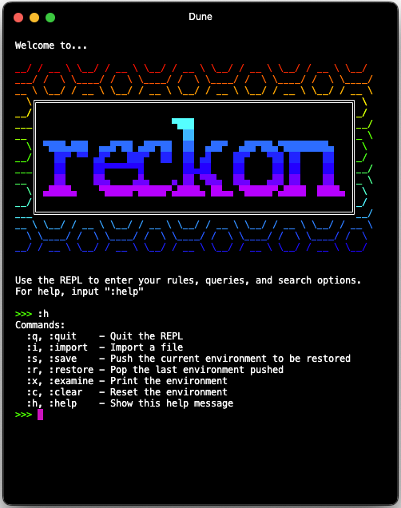
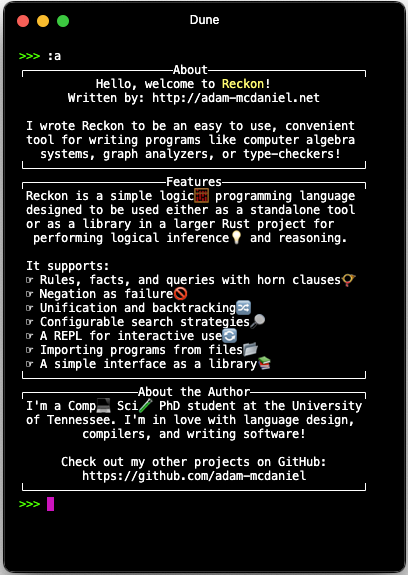

Expand description
§Reckon
🧮💡The Reckon Programming Language💭📐
A reasonable language for reasoning tasks!
 
§About
Reckon is a simple logic🧮 programming language designed to be used either as a standalone tool or as a library in a larger Rust project for performing logical inference💡 and reasoning.
It supports:
☞ Rules, facts, and queries with horn clauses📯
☞ Negation as failure🚫
☞ Unification and backtracking🔀
☞ Configurable search strategies🔎
☞ A REPL for interactive use🔄
☞ Importing programs from files📂
☞ A simple interface as a library📚
Structs§
- A solver that performs no memoization
- An environment for a solver.
- A solver that memoizes rule solutions
- A query to provide to the solver to prove true or false.
- A rule in the logic program.
- A configuration for a search.
- A solution to a query.
- A symbol that uses string interning
- A variable in a logical expression – an unknown term.
Enums§
- Representation of a logical term.
- A search traversal strategy.
Constants§
Traits§
- A solver that saves and reuses rule applications and solutions, according to whatever strategy it implements.
Functions§
- Evaluate a string of rules, queries, and search configuration settings in an environment with a given solver
- Convert an integer to a Peano number
- Convert a Peano number to an integer
- Time a function and return the result and the duration
- A function to create a new variable term from a name.